|
gauge selection: |
|
For a Lightning, Auto Meter Phantom gauges are the way to go. With the right bulbs (see below), they are a dead-nuts match for the instrument cluster. I cheated a bit. I discovered that all of the short-sweep Auto Meter fluid temp gauges are the same, as are all of the the senders. So I installed paddle switches for switchable oil/water and transmission/differential gauges. An electronic boost gauge is the third gauge. Five gauges for the price of three (plus two additional senders). |
|
pod selection: |
|
After hearing numerous reports of spotty build quality from the pre-painted Lo-Tek pod, I chose the Auto Meter 3-gauge pod. This requires that the pod be painted to match the gray interior. Various products which have been reported to match include:
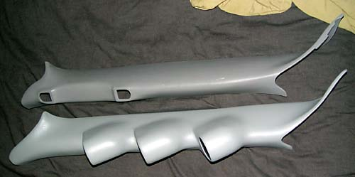Here is the difference between the Dupli-Color paint and stock. Unfortunately, Ford changed the shape of the pillar cover in mid-2002. The Auto Meter pod simply will not fit. So I ordered the Lo-Tek. The pod I received was comparable to the Auto Meter in quality and finish. The Lo-Tek comes painted, but trimming is required to fit the late-'02 a-pillar, so it has to be repainted anyway. |
|
I also installed an Auto Meter steering column pod. It does block the odometer, but that is a good thing, as the bright green LED odometer looks out of place against the subtle green gauges. |
|
tools and supplies: |
|
I'm sure I've forgotten many of the tools and supplies I used, but here is a partial list: Required tools:
Helpful tools:
Required supplies:
Required if installing switches:
|
|
wiring: |
|
There are three circuits to be wired: lighting, gauge power, and senders. Before beginning, remove the positive cable from the battery. I already had the lower dash panel removed and cannot imaging doing to job with it in place. I would remove the following panels, in this order: steering column surround, lower dash panel, driver's side weatherstripping, driver's side kick panel, and driver's side door sill. The lower dash panel is the only thing which must be unscrewed -- everything else just pops off. 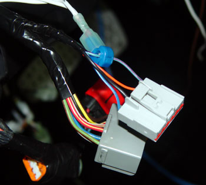Gauge light power: Run all three lighting supply wires together and connect to the blue wire with a red stripe at the headlight switch harness. This allows the gauges to dim with the stock gauge panel. For fine tuning of the amount of light from the gauges--which tend to be brighter than the stock gauges--a small rheostat can be wired under the pod and adjusted to match. The headlight switch just pops out -- it is held in place with spring clips on the sides. Just stick a screwdriver in the slot at the bottom of the switch and pop out (I typically cover the dash opening with a small piece of masking tape to avoid marring the dash). For white-faced gauges, use the supplied green condoms over the light bulbs. But even with these condoms, the Phantom gauges are just a tad too green and a tad too bright. I am told that taking a blue sharpie marker and making an "X" across the green plastic bulb cover will correct the light by making it dimmer and more blue. The better option is to replace the bulbs with some blue aftermarket lights from AutoZone -- Blazer Xtreme Lites, 168NB series, instrument/accent, 12 volts. Gauge light ground: Run all ground wires together and ground to one of the bolts formerly used to hold down the "oh shit" handle. |
|
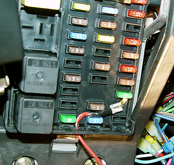Gauge power: You can pick up any switched source. If you are installing an electronic boost gauge, however, it needs a power source that is not switched off when cranking the engine. The location at the right satisfies this requirement. |
| 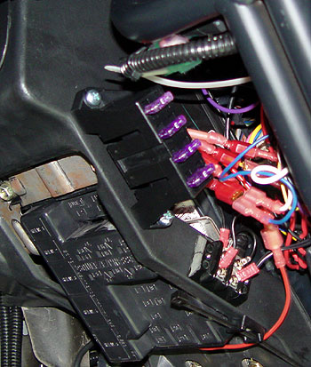I used a mini fuse block to power the gauges and various other gadgets. Also shown is a terminal strip that I used for the grounds. |
| 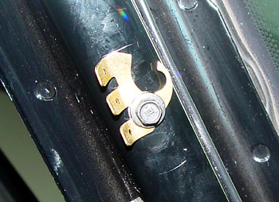Gauge ground: Most people just ground the gauges to the a-pillar or a dash ground. The Auto Meter instructions, however, call for the ground to be connected to "a good engine ground." There may be a small difference in the resistance of the engine-to-frame-to-dash ground connection. Consequently, you may wish to run the gauge/sensor ground to the component being measured, i.e., diff temp to diff housing, transmission/engine gauges to engine ground. I used the pillar ground for all senders except the differential temperature (because I was unsure of the quality of the ground path from the rear end). |
|
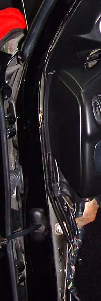Harness routing: The conventional wisdom goes are follows: Run all wires through the bulkhead to a point at the driver's feet. Then take a coat hanger or Weedeater line and run it down the front left corner of the dash. Tape the sender wires to the coat hanger and pull up. The use of quick disconnects is wise to allow for future gauge servicing or replacement. I did not use this method, but instead just ran the harnesses (1/4" is the only size that will fit) in the gap at the side of the dash. It took three harnesses for my setup. |
|
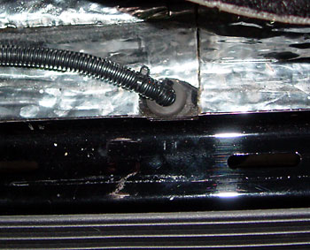
To get the loom into the cab, I used a Unibit to drill a hole in the recess just inside the driver's side door sill. The sill just pops up. Be sure to armor the wires at the point of entry to prevent the metal from cutting through the wire jackets. |
|
preparing the pod: |
|
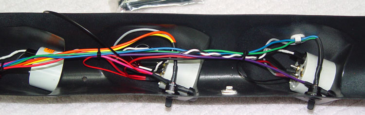 Some Auto Meter gauges come with long screws on the rear. These need to be trimmed off flush to fit in the pod. |
|
You will need to bend the ring terminals up as shown to clear the pod openings. 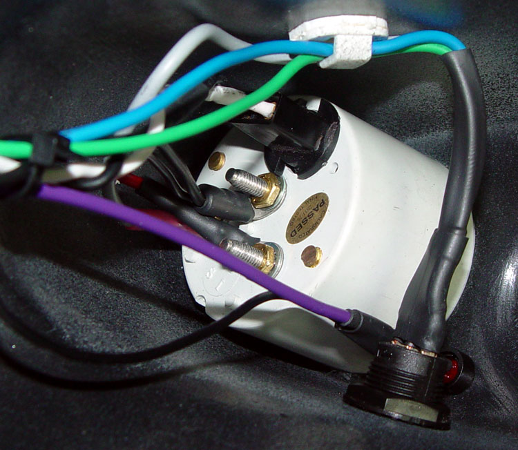 The switches are Radio Shack part # 275-648. They fit like a glove and look great on the flat section of the gauge protrusions as shown. The mounting hole is 19/32" (close is fine). There is no pinout diagram included. The center is the common pole. The outer two pins are reverse of the lever position, so the pictured switch position is closed between the center and top pins (visualize the slider inside the switch housing making contact with the opposite two pins). I used forward tranny temp/back diff temp and forward water temp/back oil temp. |
|
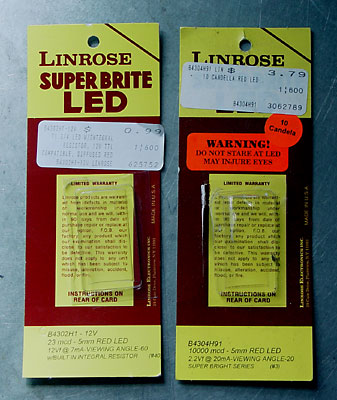I also installed an oil pressure warning LED and an LED indicator to let me know when the differential fluid cooler was operating. For the oil pressure warning LED, I used a blinding 10 candela LED. That's about 500 times brighter than a normal LED. It will literally burn your retinas if you stare at it. For the diff cooler indicator, I needed something much less bright, so I went with a 23 microcandela LED. Both are just installed into Radio Shack 5mm snap-in LED holders. |
|
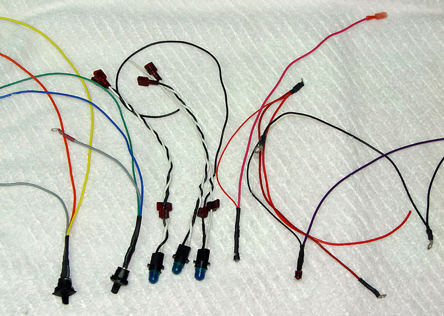 The lights are a daisy-chain affair, where each plugs into the next, and the last in the chain is connected to the headlight switch. The LED harnesses are also daisy-chained. The oil pressure warning sender sends a ground, so that LED is hooked into the master gauge power harness. The diff cooler active LED indicator gets a hot signal from the pump circuit, so it's connected into the master ground harness. |
|
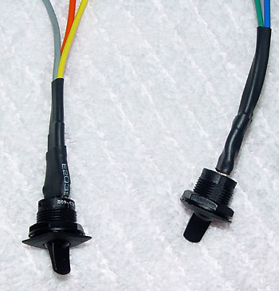Note that the switches and
LEDs have shrink wrap on the individual wires, then on all of the wires
together. This is for strain relief. One of the lessons I
learned from Pod 1.0 was that the tiny solder lugs on the Radio Shack
switches can be fragile.
The poles are small, so the wires must be soldered and shrink-wrapped. The best method is to run as much of the wire that you can through the tiny hole in the solder lugs, then fold the wire back over itself and solder it. I used three layers of heat shrink -- one over each wire, then two over the entire three-wire assembly. |
|
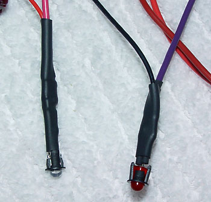And the LEDs have to snake just around the side of the gauges, so some strain relief there can't hurt either.
|
|
installing the pod: |
|
Make sure to leave the wires between the pod and the truck a little longer than you think is required. It is difficult to attach the pod while fumbling around with short wires. 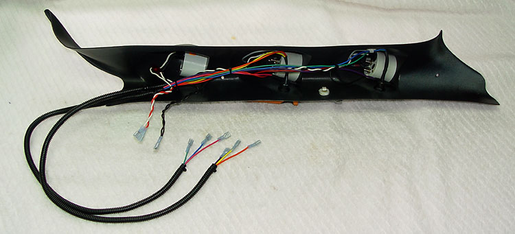 In the shot below, you can see that the harnesses leave me with only two ground wires to attach while installing the pod. All other wires are attached on the floor before the pod is lifted. 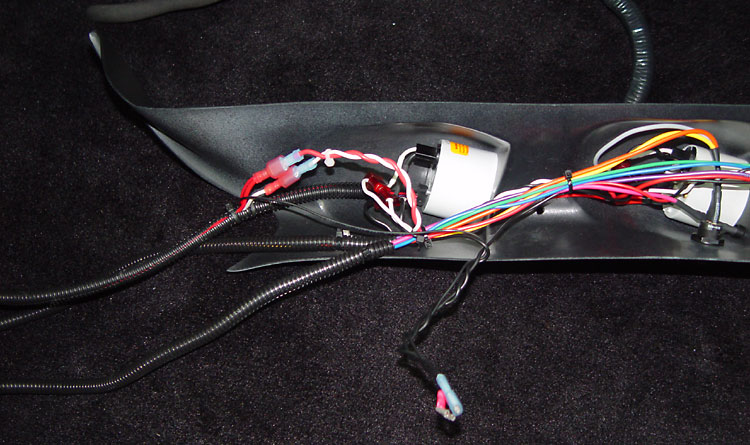 Note also that you will need longer screws than the #8 X 1" flathead wood screws supplied with the Lo-Tek. You will need 1.25" to 1.5" screws. I used 1.5". Place a towel over the dashboard for the final wiring. Place the pod in place and press it tight against the pillar. Start drilling the top pilot hole enough to mark the metal. Remove the pod. Then finish drilling the hole. Then thread the pilot hole with a spare #8 screw. Attach the pod with the top screw, then line up and repeat the process for the bottom hole. I scrapped the whole wood screw idea and installed the pod with machine screws, threaded into Rivnuts that I popped into the A pillar. |
|
senders: |
|
Install senders with Teflon
tape, but be careful not to wrap the tape all the way to the bottom of the
sender threads, as scraps of tape can get into the system.
After a couple of years, some of my wires had become a little brittle. So I made a full sender harness for Pod 2.0. 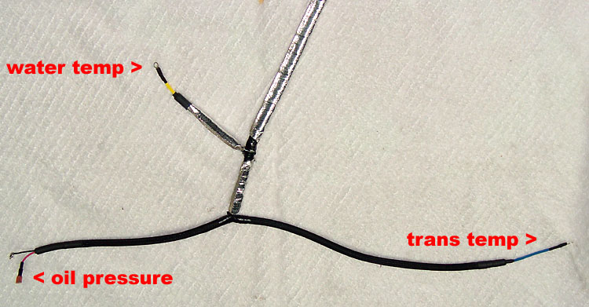 There are no bare wires. Every wire is in a 1/4" split loom, which is then covered with TechFlex (black in the above photo) or Thermo-Tec heat shielding. The transmission temp is shown in detail below. 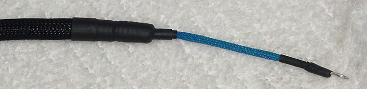 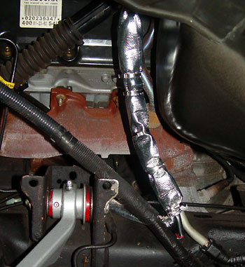I routed the sender harness and Wideband Commander oxygen sensor harness along the hard tube just inside the driver's wheel well. This allows the wires to run right up to the brake booster, and then into the cab through the large grommet where the stock boost line passes through. I then covered the both harnesses with Thermo-Tec sleeving, secured with stainless straps. |
| 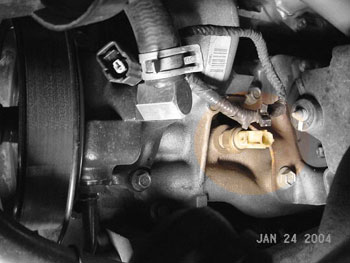Engine oil temperature or pressure: Find the casting on which the oil filter sits. Follow it forward. You will see the factory oil pressure sender. You can tee into that. The factory port and sender are 1/4" NPT, so you will need to adapt to 1/8" NPT for the Auto Meter sender. The fittings are standard plumbing fittings. |
| 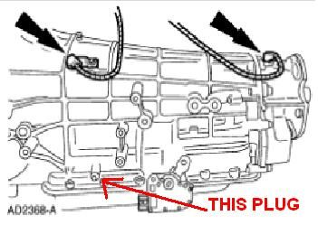Transmission fluid temperature: There is a plug just above the shift mechanism on the driver's side. Just remove the plug and screw in the sender. |
| Water temperature: There is a plug in the block underneath the driver's side exhaust manifold. |
 Differential fluid
temperature: I ran a
sender wire and ground wire back to the diff cover. I was unsure of
the integrity of the ground path to the axle. Differential fluid
temperature: I ran a
sender wire and ground wire back to the diff cover. I was unsure of
the integrity of the ground path to the axle.
I covered the harness with Techflex to prevent chafing and protect from heat. The Mag-Hytec cover has built-in sender port. For the stock diff cover, use a B&M drain plug kit.
|
|
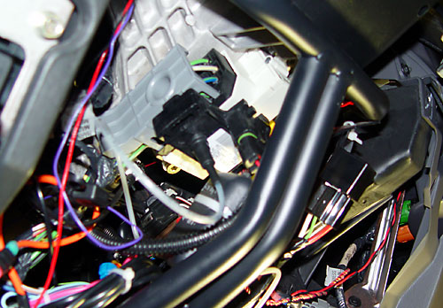Boost gauge:
I installed an electronic boost gauge
in the a-pillar pod. The MAP sensor is secured under the steering
column with double-sided tape.
The air line is teed off of the stock boost gauge line as shown below. |
| 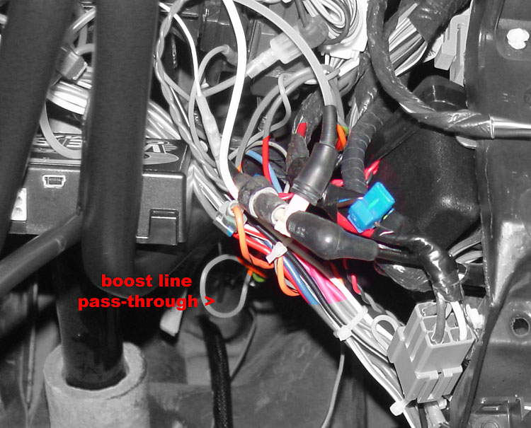 |
|
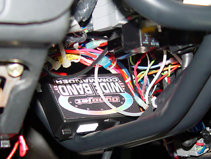Air-fuel gauge: There are lots of techncially better air-fuel gauges, but I used a Wideband Commander because it matches the other Auto Meter Phantoms. I won't attempt to outline the whole installation, but here are a few tips. I mounted the control box in the cradle under the steering column, secured with large zip ties. There are four harnesses. One of them has many unused wires (unless you have a data acquisition system), and all are way longer than needed. So I took the two accessory harnesses made a shortened master harness, cutting off the unused wires, but leaving enough wire to work with if I ever need to use them. The four wires shown are the only ones used on a normal installation. 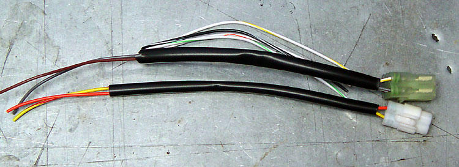 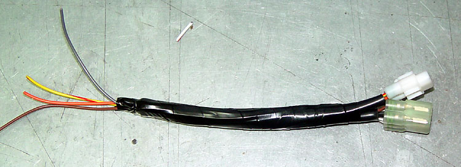 The excess harness material was zip tied under, over, and around the control box. I just didn't feel like shortening all of the wires, as they are so small that soldering would have been required. 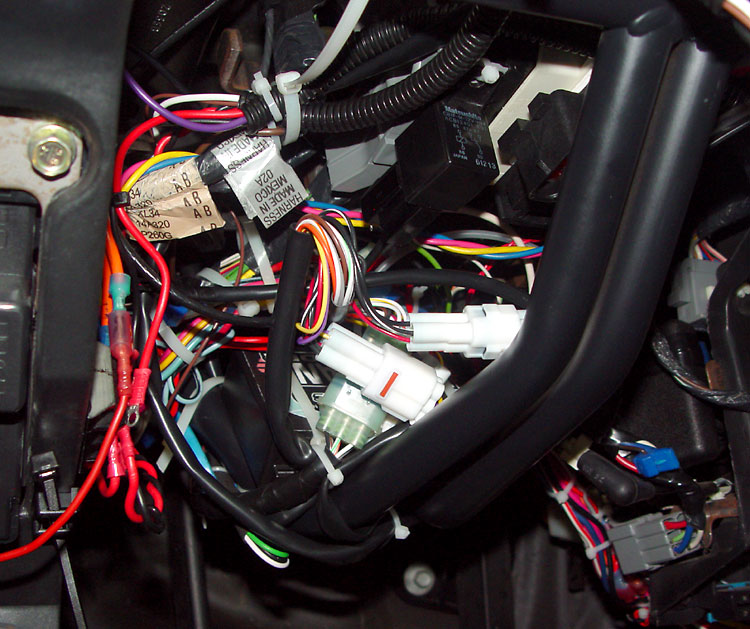 To gain access the the USB port, I used a USB extension cable. |
|
steering column pod: |
|
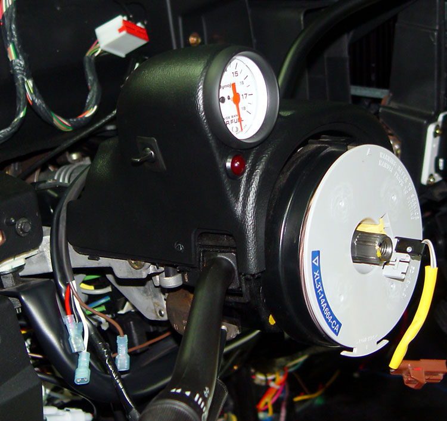 To install the steering column pod, remove the u-shaped piece which surrounds the steering column (put the shifter in low). Slip the pod right over the existing cover. Make sure to run any wires out directly behind the gauge -- there is a channel molded there for the wires. Many have used double-sided tape or nothing at all to hold the steering column pod on. Double-sided tape is too hard to remove and the pod just did not seem secure enough for racing duty. So I drilled one hole and used one of the plugs on the driver's side. The passenger's side is wedged in behind the surround pretty well. I used mine for the Wideband Commander display. The switch shown is for datalogging, and the LED is the datalogging indicator. To wire this setup, I ran 12 volts to one side of the switch, and the brown wire from the WBC harness to the other side. I then tapped the brown wire for 12 volts for the LED power. The negative LED wire is tapped into the gauge light ground. |
|
steering column surround: |
|
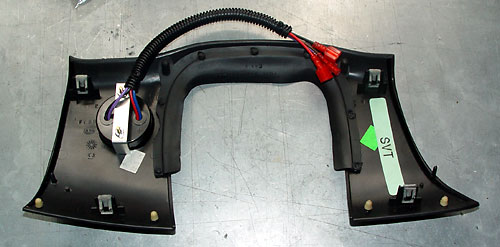A gauge can be mounted in the steering column surround, but since it cannot be seen from a normal driving position, it needs to be a gauge that does not need to monitored. There is no Auto Meter Phantom series temp gauge that goes down low enough for an intercooler fluid temp gauge. I use a Nordskog digital gauge. It goes down to 0 degrees. A full-depth gauge may not work. Be sure to mock it up carefully before cutting. Since the surround needs to come off, make sure to leave the wires plenty long. |
|
wrapping up: |
|
Do a final wiring check, then
reattach the battery cable and do a smoke test.
Some have claimed that they can do the job in 2 or 3 hours, but Pod 1.0 took me about 15 hours (not including at least that in planning and parts runs). Hell, it took about two hours just to wire the gauges. In Pod 2.0, I spent the better part of an afternoon on the harnesses alone. Wideband Commander, steering column pod, and intercooler temp gauge included, and redoing all of the harnesses, I have well over 30 hours into Pod 2.0. |